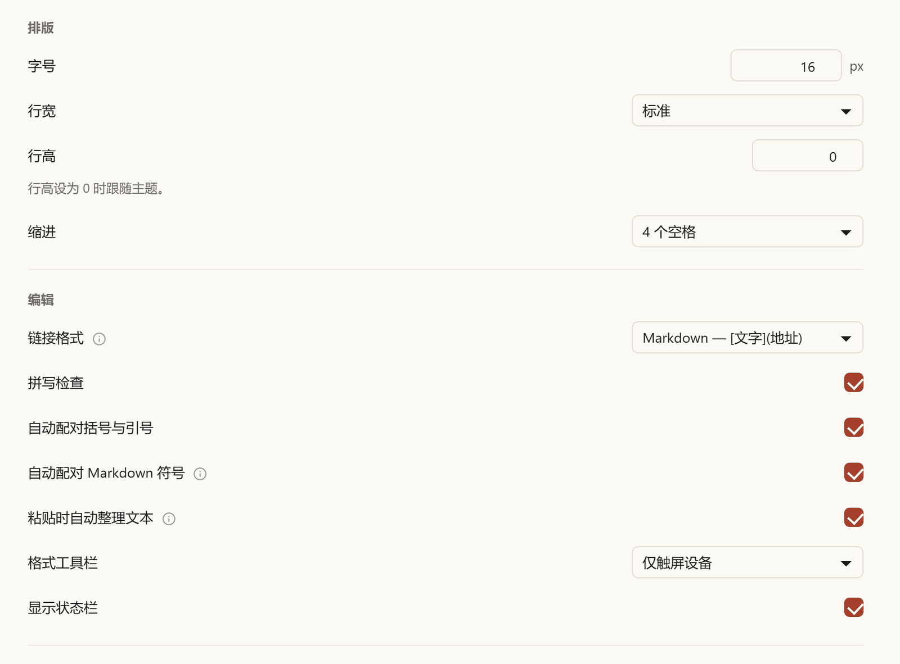

设置详解
本文目录
入口：文件 › 偏好设置，或状态栏左下角的齿轮。
通用
管"保存、索引、文件、外部工具"。
| 分组 | 设置项 | 建议 |
|---|---|---|
| 保存 | 自动保存 | 保持开启 |
| 保存 | 恢复上次打开的文档 | 保持开启；关闭后每次启动是空白页 |
| 保存 | 文件历史条数 / 保留天数 | 重要文档可调高（默认 50 条 / 7 天） |
| 文件 | 外部文件打开方式 | 固定行为：只开标签不切工作区；当前库内的文件按库内文档打开，其余按外部标签阅读（图片/双链走当前库）。想跟过去用标签右键「打开所在文件夹为工作区」 |
| 文件 | 默认工作区 | 捕获/速传/系统分享的落点；未设置时先进当前工作区今日日记 |
| 文件 | 磁盘文件被外部改动时 | 每次询问（默认）/ 总是保留我的 / 总是重新加载 |
| 文件 | 允许 morz:// 链接写入笔记 |
默认关；开启后外部链接可新建/追加，open 不受影响 |
| MCP | 允许外部 AI 客户端访问文件夹 | 默认关；需要接 MCP 工具时再开 |
| 更新 | 自动检查 / 自动下载 | 自动检查默认开；自动下载默认关，关闭时只提示，开启后下载完在标题栏提示重启 |
快捷键
能做什么：所有命令都能重新绑定；搜索框输入中文或命令 id 都能筛。
操作：点某条快捷键 → 按下新组合 → 立即生效；Backspace 取消绑定；右上角「恢复默认」。
撞键：如果组合已被占用，会在这一行下面直接显示占用它的命令，可选「解除并分配」（解绑对方、把组合改派给当前命令）或「取消」。
常改的几项：
- 打字机模式（默认无键）
- 阅读模式（默认
Ctrl+E） - 命令面板（默认
Ctrl+P）
编辑器

| 分组 | 设置项 | 说明 |
|---|---|---|
| 排版 | 字号 / 行宽 / 行高 / 缩进 / 段落首行缩进 | 行高 0 = 跟随主题；首行缩进只作用于正文段落（标题/列表/引用/代码/表格不缩进），光标也在缩进位置，导出同样生效 |
| 编辑 | 链接格式 | Markdown [文字](地址) / 双链 [[页面]]；新插入的本地图片也跟随（双链写 ![[图片名]]，不带目录） |
| 编辑 | 拼写检查 | 系统词典；中文界面默认关，英文界面默认开 |
| 编辑 | 自动配对括号与引号 | 输入 ( 自动补 ) |
| 编辑 | 自动配对 Markdown 符号 | 选中文字后输入 * 自动包起来 |
| 编辑 | 粘贴时自动整理文本 | 去追踪参数、零宽字符、行尾空白 |
| 编辑 | 笔记链接预览 | 默认按住 Ctrl/Cmd 悬停约 300ms 才弹出目标预览（双链与普通 [文字](note.md) 都支持）；不按键不弹，可关闭。预览内可滚动阅读；拖动顶部标题栏会固定窗口（移开/滚动不再关闭，Esc 或 × 关闭）；Ctrl/Cmd+点击链接仍是新标签打开 |
| 编辑 | 标题后回车接列表 | 默认关；大纲笔记/每日笔记可开启 |
| 界面 | 底部工具栏样式 | Editing Toolbar 插件 › 底部 tab；可选「胶囊」（与编辑器格式栏一致）或「标准」 |
| 界面 | 显示状态栏 | 关掉更沉浸；也可直接右键状态栏隐藏，视图菜单恢复 |
| 编辑 | 状态栏显示文档路径 | 默认关；开启后用可点击面包屑显示工作区路径，单击文件夹打开卡片视图，右键在文件树中展开定位 |
外观
| 项 | 说明 |
|---|---|
| 明暗模式 | 跟随系统 / 总是浅色 / 总是深色 |
| 内置主题 | 八套，各有明暗 |
| 主题设置（⚙） | 蓝托帕石：六套配色、字体、行高、纸张、侧栏背景 |
| 主题文件夹 | 加载 Obsidian 的 .css 主题；桌面端导入的主题直接保存在这里（默认位置见下） |
| 主题颜色 | 自定义页面背景、正文色、强调色、侧栏背景、选中背景 |
主题的默认目录：<应用数据目录>/themes，详见 主题与插件文件夹。
详见 外观与阅读。
图片
| 项 | 说明 |
|---|---|
| 插入位置 | 文档旁的 assets/ / 与文档同名的目录 / 自定义目录 |
| 目录名 | 自定义目录时的文件夹名 |
| 文档图片目录字段 | 在文档头部用某个 frontmatter 字段（如 my-image-dir: ./pics）单独指定这篇的图片目录；留空只识别 Typora 的 typora-copy-images-to。只影响这篇文档新插入的图片，选「嵌入文档」时不生效 |
| 插入时优化图片 | 自动（默认，更小时转 WebP）/ 保持原文件 / 总是 WebP / 总是 JPEG；只处理新插入的副本 |
| 图片质量 | JPEG/WebP 重编码质量（40–98，默认 82） |
| 最长边像素 | 超过就等比缩小；0 = 不缩放（默认 2560） |
| 插入文件重命名 | 保留原文件名（默认）/ 加日期前缀 / 按内容哈希命名 / 自定义模板（{date} {time} {name} {hash}） |
| 图片说明 | 单独成段的图片是否显示图注 |
导出
| 项 | 说明 |
|---|---|
| HTML 与 PDF 使用当前主题 | 关掉 = 素色排版 |
| PDF 页面尺寸 | A4 / Letter / Legal / A5 |
| PDF 页边距 | mm |
详见 导出与备份。
内置插件 / 第三方插件
| 页面 | 管什么 |
|---|---|
| 内置插件 | 随应用分发的插件（日历、图谱、图床、任务等）启停与设置；右上角 📖 打开该插件的手册页 |
| 第三方插件 | 从注册表或本地文件夹安装、启停、查看权限；检查更新 |
斜杠指令（内置插件）
设置 › 插件 › 斜杠指令。插件默认停用；在插件页打开右上角开关即生效。开启后，在行首或空格/开括号后输入触发字符（默认 /，可改成 @）会弹出命令下拉，交互和双链补全一致：输入筛选、↑/↓ 选择、Enter/Tab 执行、Esc 关闭。
- 任务行优先显示截止日期、任务属性、状态切换等任务指令；普通段落显示段落、插入、格式指令。
- 我的指令：自定义触发词 + 显示名 + 绑定命令；命令来源与
Ctrl+P相同，核心命令和插件命令都能选。列表可拖动排序、上下移、改名、删除。 - 内置指令固定存在，自定义项排在内置项前面；触发词冲突时自定义覆盖内置。
- URL、日期、路径和代码块里不会触发；例如
2026/11、https://、src/app。 - 停用「斜杠指令」插件会立即停止弹出菜单，已保存的触发词和自定义项仍保留。
权限：安装时列出的权限就是插件能碰到的范围；不需要的插件及时停用。
插件的界面足迹是受控的（UI 克制）：
- 插件注册的右栏面板默认不显示：右栏空白处右键，在勾选列表里开启；
- 插件的状态栏图标默认显示：状态栏右键 ›「插件状态项」可逐个隐藏；
- 插件贡献的右键菜单项全部收进「插件」二级子菜单，主菜单不会随插件数量膨胀。
性能守护：插件持续拖慢响应时（单次回调 >400ms 或 10 秒内占用主线程超 600ms），
会先弹一次提醒；反复发生时第三方插件会被自动停用并在插件管理器标出
「已自动停用（性能）」，手动重新开启即可恢复。内置插件只提醒不自动停。
设置 › 通用可关闭性能守护。
遇到卡顿想反馈：命令面板搜「诊断：记录 60 秒」先开始记录 →
复现卡顿 → 结束后点提示里的「导出报告」，把生成的 JSON 发给维护者即可
（只记本机，不上传；报告含当时主题、启用的插件与卡顿分布，便于定位）。
主题与插件文件夹
主题和插件都是磁盘上的普通文件，默认放在应用的本地数据目录里。所有工作区共用，升级或卸载 Morz 一般不会删除（同步盘备份时记得一起带走）。
| 系统 | 主题 | 插件 |
|---|---|---|
| Windows | %APPDATA%\com.morz.editor\themes |
%APPDATA%\com.morz.editor\plugins |
| macOS | ~/Library/Application Support/com.morz.editor/themes |
~/Library/Application Support/com.morz.editor/plugins |
| Linux | ~/.local/share/com.morz.editor/themes |
~/.local/share/com.morz.editor/plugins |
- 主题：一个主题一个子目录，至少含
theme.css，可带manifest.json。导入主题时 Morz 会自动复制到这里；也可以直接把现成的 Obsidian 主题目录丢进来。 - 插件：一个插件一个子目录，含
manifest.json和main.js（可选styles.css），启动时自动扫描。 - 改到别处：设置 › 外观 › 主题文件夹，或 设置 › 第三方插件 → 目录图标。自定义目录同样会监听，新增/更新文件后自动刷新。
- Web / PWA：没有稳定的本地目录，主题存在浏览器存储里；插件用安装/链接目录。
密钥
插件保存的 API key / token 集中列在这里（只列字段，不显示值，也不写入笔记或设置 JSON）。
| 位置 | 存在哪 |
|---|---|
| 桌面 | 系统钥匙串（Keychain / Credential Manager） |
| Web / 移动 | 应用内密钥区（IndexedDB） |
每行右侧的「清除」只删这一项；插件下次用到时会让你重新填写。
插件设置里标为密码/密钥的字段（例如 图床 的兰台 API Key、AI 助手的 API Key）会自动出现在这里，不会写进设置 JSON；旧版本留在设置里的明文会在启动时迁移过来。本页只负责查看和清除，不提供手动新增——密钥必须归属于某个插件的设置字段，请到对应插件设置里填写。
自定义 CSS
全局样式覆盖，最后手段。可以改变量（如 --write-font-size）、改某个类的样式。
:root {
--write-max-width: 760px;
}改坏了怎么退：清空该页内容即可。想让改动可复用，建议做成主题（设置 › 外观 › 从内置主题创建）。
隐私
应用锁：PIN / 生物识别、切后台多久自动锁。忘记 PIN 时用一次性恢复码关闭。
本地诊断日志：始终只写本机（不采集正文、不上传），只保留"上一会话"一份快照，
用于崩溃后取证；没有累积日志，也没有需要定期清理的文件。错误只静默记录，不再占用
状态栏（避免把无害的浏览器布局提示当成故障）；需要反馈卡顿时：命令面板搜
「诊断：记录 60 秒」→ 复现 → 导出，录制期间状态栏显示倒计时。桌面端也可从命令面板
「诊断：打开日志文件夹」进入目录（crash.log / perf.log），不需要时自行删除即可。
重置
设置 › 通用最底部有「恢复默认设置」。不会删除文档，只重置偏好、快捷键、主题选择等界面配置。